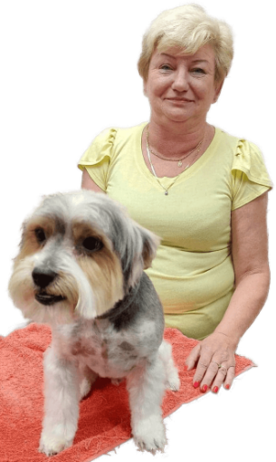

Ewa Wasilewska

Pani Ewa zajmuje sie w naszej przychodni groomingiem czyli strzyżeniem i kąpaniem psów, i kotów. W swojej pracy jest niezwykle sprawna manualnie oraz ma zmysł artystyczny.
Jej ulubioną rasą jest yorkshire terrier, w których się specjalizuje i których jest wieloletnią hodowczynią.
Prywatnie właścicielka yorka, chihuahua oraz dwóch kotów rasy: brytyjski niebieski.